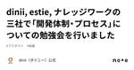

dinii エンジニアリングブログ
https://note.com/dinii/m/mf6424286cfa2
ダイニーのプロダクト開発や開発組織、どんなプロダクトなのか、どのように開発しているのか、エンジニアが週に1度担当制で記事を書いています。 黙々と飲食業界にとってより良いプロダクトは何か？を考え、プロダクトに向き合う彼らの書く記事は非常に読み応えのあるものばかりです。 「この人の書く記事はいつも面白いな」そう思っていただけたら、筆者の名前を公開していますので、ぜひエンジニアとカジュアル面談を通してよりダイニーについて、ダイニーのエンジニアについて知っていただけますと幸いです。 また、2ヶ月に1度、ダイニー導入店で開催しているエンジニア向けイベント「ダイニー体験会」もありますので、興味
フィード

dinii, estie, ナレッジワークの三社で「開発体制・プロセス」についての勉強会を行いました
dinii エンジニアリングブログ
先日、dinii、株式会社estie、株式会社ナレッジワークの三社間で「toBスタートアップの開発体制・プロセス」についての合同勉強会を行いました。当初は一般の参加者も募るイベントとして企画していたのですが、諸般の都合により一般公開は中止しました。しかし、マルチプロダクト展開を行うtoBスタートアップとして共通している三社であり、せっかくの機会なので三社間の勉強会として改めて開催したものです。estie 社に会場をお貸しいただき、三社で10名強の参加者が集まりました。まずは雑談から始まり、それから各社の取り組み紹介と質疑応答を行いました。簡単にですが、各社の取り組みと質疑応答の内容について、こちらでシェアできればと思います。続きをみる
5日前
Letter for SWE (Platform Engineering)
dinii エンジニアリングブログ
はじめまして、株式会社 dinii (以後ダイニー) で VP of Technology というロールを担っている karszawa と申します。この度、ダイニーで SWE (Platform Engineering) という新規の採用ポジションを公開しました。ダイニーでは全てのプロダクトで統一の技術（Node.js, React, Cloud Run, PostgreSQL）を採用しており、ソフトウェアの基盤部分を整理することによるスケールメリットが非常に大きいです。この記事では、そんなダイニーにおける基盤開発を担うこのポジションへの期待や「やりがい」について説明します。続きをみる
6日前
Letter for SRE (Incident Management) 1
1
dinii エンジニアリングブログ
はじめまして、株式会社 dinii (以後ダイニー) で VP of Technology というロールを担っている karszawa と申します。この度、ダイニーで SRE (Incident Management) という新規の採用ポジションを公開しました。あまり聞き慣れない名称のポジションなので、このポジションが生まれた背景や、このポジションへの期待について説明します。続きをみる
13日前

ダイニー体験会 #3 @新橋 を開催しました
dinii エンジニアリングブログ
こんにちは、ダイニーのソフトウェアエンジニアの urahiroshi です。ダイニーでは、年に1回くらいの頻度で「ダイニー体験会」というイベントを実施しています。（過去のレポはこちら）続きをみる
3ヶ月前
dinii と POS 連携
dinii エンジニアリングブログ
こんにちは、株式会社 dinii で VP of Technology をしている @karszawa です。この記事は dinii プロダクトアドベントカレンダー n 日目の記事です（ただし n は自然数とします）。続きをみる
4ヶ月前
Hasura User Group Tokyo Meetup #03 を開催しました！
dinii エンジニアリングブログ
2023年10月20日に浜松町ビルディング3階の ハマラボ!!! にて Hasura User Group Tokyo Meetup #03 を開催いたしました！前回のイベントから約9ヶ月ぶりの開催となってしまったのですが、多くの方々が集まってくださいました。また今回は Hasura 社の Senior Product Manager の方もトークセッションに参加してくださりました！続きをみる
5ヶ月前
Google Cloud 主催 Digital Native Leader’s Meetup #4 に参加しました！
dinii エンジニアリングブログ
こんにちは。dinii CTO の大友です。先日開催された Google Cloud 主催の Digital Native Leader’s Meetup #4 にご招待いただき、参加してきました。実は前回も、LT 登壇付きで参加させていただいたので、dinii としては2回目の参加となります。前回の参加の記録続きをみる
6ヶ月前
Google Cloud 主催 Digital Native Leader’s Meetup #3 に参加 & LT 登壇しました！
dinii エンジニアリングブログ
こんにちは dinii の Platform Team で SWE をしている @karszawa です。 Tweets by karszawa 続きをみる
9ヶ月前
スタートアップと Google Cloud のお付き合い
dinii エンジニアリングブログ
こんにちは！dinii のソフトウェアエンジニア、kimujun (https://twitter.com/1130_kimu) です。この記事では生まれたての赤ん坊スタートアップだった dinii が、どのように Google Cloud を活用して成長してきたかをお見せしたいと思います。時間がない人は次の行だけでも読んでいってください。「Google Cloud 最高！」続きをみる
10ヶ月前
dinii のプロダクト開発を担うチームのスクラムをカイゼンした話
dinii エンジニアリングブログ
こんにちは、dinii のエンジニアの谷藤 (@HiroIot) です！愛猫が大好きすぎて、最近は仕事以外の時間をすべて愛猫に注いでいます😽続きをみる
10ヶ月前
2023年版: dinii のプロダクト開発組織
dinii エンジニアリングブログ
こんにちは、dinii CTO の大友(@dinii_k_otomo)です。dinii では、次の 50年の飲食インフラとなるべく、飲食店内向けモバイルオーダーと CRM サービス「ダイニー」を開発・運用しています。先日は、Coral Capital さん主催の Startup Aquarium にも参加させていただき、とても多くの人に dinii を知ってもらうきっかけにもなったかなと思います。ご参加頂いた皆様、どうもありがとうございました！！続きをみる
1年前
ダイニー体験会 #1 を開催しました
dinii エンジニアリングブログ
こんにちは、ダイニーのソフトウェアエンジニアの @lightnet328 です。4月15日にダイニーのモバイルオーダーを導入店で弊社のエンジニアと一緒に体験する「ダイニー体験会 #1」を「スシンジュク ほぼ新宿のれん街店」で開催しました。続きをみる
2年前
dinii が NestJS のスポンサーになりました
dinii エンジニアリングブログ
こんにちは！dinii の karszawa です。本日は、先日より dinii が開始した NestJS という OSS への寄付（スポンサー）について説明したいと思います。https://opencollective.com/nest続きをみる
2年前
医療界→飲食界に行った話
dinii エンジニアリングブログ
みなさんこんにちは、4/1 から株式会社dinii でエンジニアとして働いております、飯塚浩也と申します。実は、就職の前に半年ほど、起業に向けて準備しておりました。しかし、諸事情により断念し、たまたまそのタイミングでご縁があったのが、今の会社となります。続きをみる
2年前
diniiでなら、自分が好きな技術でビジネスにも貢献できる。大企業からスタートアップへ転職したエンジニアリングリード
dinii エンジニアリングブログ
「diniiではどんなメンバーが働いているの？」メンバー一人ひとりにフォーカスし、担当業務や仕事に対する価値観、diniiではたらくことの面白さに迫るインタビューシリーズ。第二弾はエンジニアリングリードとしてエンジニアチームを率いる唐澤弘明（@karszawa）さんです。新卒入社したメガベンチャーを経て、diniiを選んだ理由とは？続きをみる
2年前
NestJS と Hasura で実現する Production GraphQL
dinii エンジニアリングブログ
こんにちは！ダイニーでソフトウェアエンジニアをしている kimujun です。この記事は NestJS meetup Online #1 で発表した内容を記事化したものになります。続きをみる
2年前
飲食店舗運営を支える自動釣銭機の話
dinii エンジニアリングブログ
こんにちは、ダイニーのソフトウェアエンジニアの @lightnet328 です。今回はダイニーのレジアプリと連携することができる自動釣銭機の役割や連携の仕組みをデモを交えながらお伝えしたいと思います。続きをみる
2年前
トイルを減らしている話
dinii エンジニアリングブログ
こんにちは、ダイニーでソフトウェアエンジニアをしている唐澤 karszawa です。 前回の記事から間隔が空いてしまいましたが、これからは採用強化の一環として毎週エンジニアリングブログを投稿していきます。人数が少ないダイニーでは各人の負担が大きく週一投稿なんて実現できないんじゃないかと自分でも心配していますが、色々と工夫してなんとか実現したいです。その話もまた別の機会に紹介できればと思います。本日はダイニーの開発チームで対応している「トイル」についてお話します。トイルとはエンジニアが手作業で対応しなければならない作業のことで、他の特徴としては続きをみる
2年前
ダイニーで実践している React Native アプリのデプロイ技術について
dinii エンジニアリングブログ
この記事は React Native Advent Calendar の一日目の記事です。この記事ではダイニーにおける React Native + Expo アプリのデプロイを支える技術についてご紹介しようと思います。ダイニーにおける React Native の活用事例続きをみる
2年前
正式リリースされた Findy Teams で dinii のエンジニアリングチームの生産性を可視化してみた
dinii エンジニアリングブログ
こんにちは、dinii でソフトウェアエンジニアをしている唐澤 @karszawa です。先日発表された M1 Max プロセッサの MacBook Pro が届くのが楽しみすぎて気が気でない今日このごろです。エンジニア全員分の M1 Max MBP を購入しました！ワクワク☺️ pic.twitter.com/zBZToYDZFn— 山田真央｜ダイニー (@maochil) October 19, 2021続きをみる
2年前
ダイニー独自の型安全なエラーハンドリングに TypeORM のトランザクション管理を取り入れる
dinii エンジニアリングブログ
こんにちは、ダイニーで業務委託としてソフトウェアエンジニアをしている @odan3240 です。業務委託として開発体験の向上に繋がるタスクを担当しており、今回は odavid/typeorm-transactional-cls-hooked をプロダクトに導入した話を紹介します。続きをみる
3年前
ダイニーの開発ライフサイクル
dinii エンジニアリングブログ
こんにちは！ダイニーでソフトウェアエンジニアとして働く木村 (@1130_kimu)です。前回のエンジニアリングブログ では、先月弊社で開催した HASURA CON'21 Recap について記事を書きました💪続きをみる
3年前